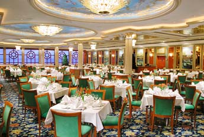
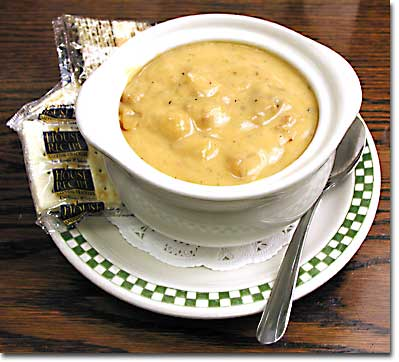
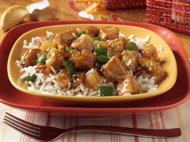
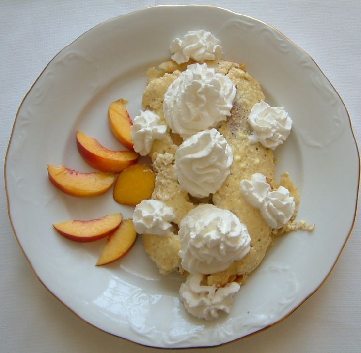
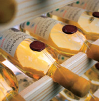

|  |
Házfok Étterem és Szálloda
Kellerfa, Fő tér 1-3
|
Ünnepi menü a Házfok Étteremben |
|
| Hozzávalók: reszelt trappista 12 dkg vaj 4dkg liszt 5 dkg húsleves 1,2 l fehérbor 1 dl tejföl , 2 dl tojássárgája 1db fokhagyma 1 gerezd ementáli sajt 10 dkg és ízlés szerint őrölt fekete bors, szerecsendió, só |
A vajból és a
lisztből világos rántást készítünk, állandó kevergetés
közben hozzáöntjük a húslevest. Amikor felforrt, beleöntjük
a bort. Zúzott fokhagymával, borssal, szerecsendióval
fűszerezzük, majd belekeverjük a reszelt sajtot. Addig
forraljuk, amíg a sajt megolvad, majd levesszük a tűzről, és
beleöntjük a tejföllel összekevert tojássárgáját. Forrón
tálaljuk. Betétként kis kockákra vágott sajtot teszünk bele. |
 |
| Hozzávalók: Csirkecomb 4 egész Ananászbefőtt 6 karika Befőttlé 1 dl Tejszín 2 dl Vaj 5 dkg húsos paradicsompaprika 2db citromlé 1 teáskanál petrezselyemzöld 1 csokor őrölt fehér bors 2 mokkáskanál, és ízlés szerint só. |
A forgónál
kettévágott csirkecombokat bedörzsöljük sóval, borssal,
alufóliába csomagolva sütőben megsütjük, majd a fóliából
kibontva pirosra pirítjuk. Közben elkészítjük az
ananászragut. A kis kockákra vágott ananászbefőttet és
paradicsompaprikát vajon enyhén megpirítjuk. Sóval, borssal
ízesítjük, majd hozzáöntjük a befőttlét és tejszínt. Sűrűre
forraljuk és meghintjük a finomra vágott
pertezselyemzölddel. Ízesítjük citromlével, hogy kellemes
savanykás ízu legyen. Tálaláskor a sült csirkecombokat a
meleg tálra tesszük, és köré öntjük az ananászos ragut. Sült
krumplival, vagy párolt rizzsel körítjük. |
 |
| Hozzávalók túró,őszibarack,liszt,tojás |
.Az étel
főszakácsunk védett étele, ezért receptjét nem közölhetjük. Megértésüket köszönjük! |
 |
| kései szüretelésű Tokaji Furmint
bort |
10-12Co-os
hőmérsékleten! |
 |